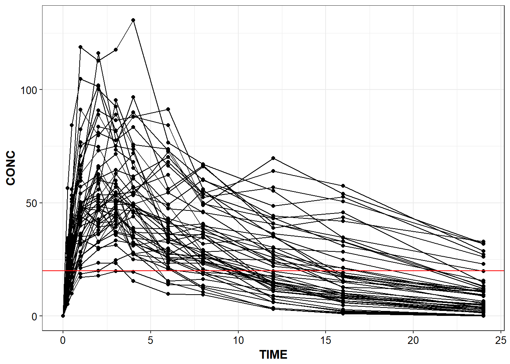
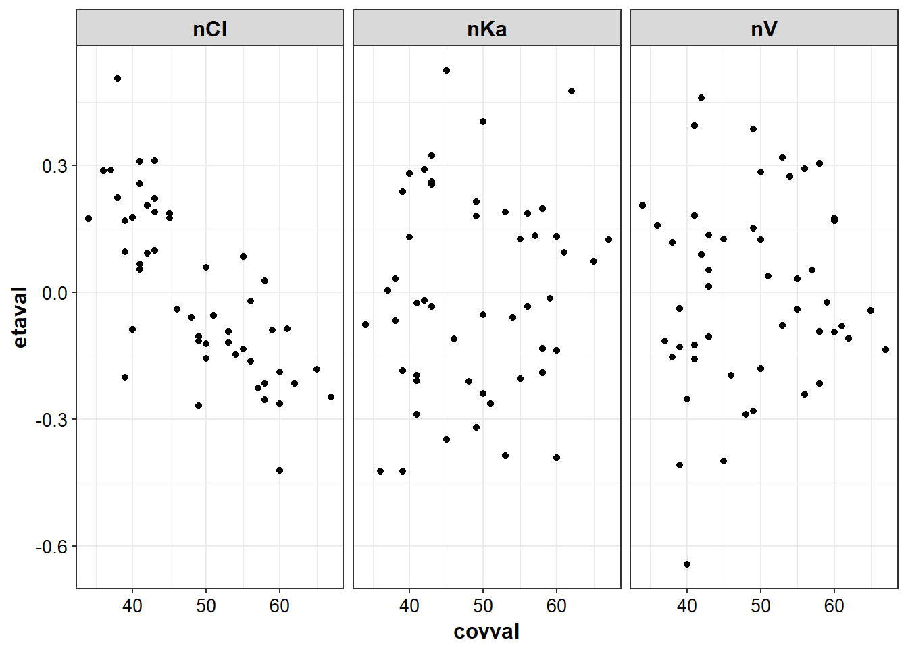
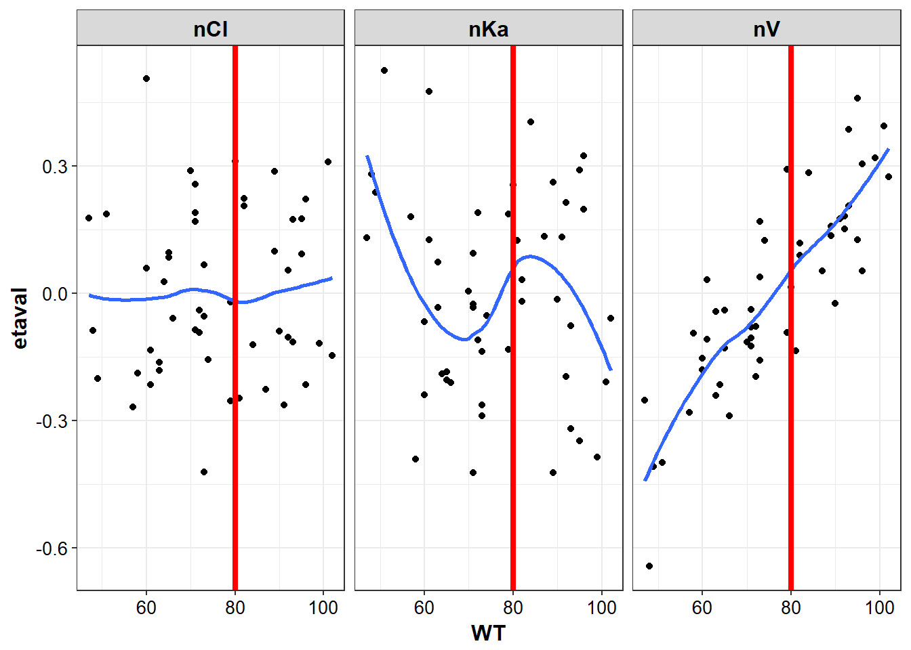

7 Nonstandard evaluation
library(lazyeval)
library(PKPDdatasets)
library(PKPDmisc)
library(tidyverse)
#> Loading tidyverse: ggplot2
#> Loading tidyverse: tibble
#> Loading tidyverse: tidyr
#> Loading tidyverse: readr
#> Loading tidyverse: purrr
#> Loading tidyverse: dplyr
#> Conflicts with tidy packages ----------------------------------------------
#> filter(): dplyr, stats
#> is_formula(): purrr, lazyeval
#> lag(): dplyr, statseta_cov <- read_csv("../data/EtaCov_base.csv")
#> Parsed with column specification:
#> cols(
#> Scenario = col_character(),
#> ID = col_integer(),
#> WT = col_integer(),
#> AGE = col_integer(),
#> nV = col_double(),
#> nCl = col_double(),
#> nKa = col_double()
#> )- lazyeval::interp()
- lazyeval::lazy_eval()
This doesn’t work, as inside aes, ggplot literally evaluates the column names, so will look for the column called xtemplate, instead of Time
x <- "Time"
y <- "Conc"
ggplot(df,
aes(x=xtemplate,
y=ytemplate,
group = group_template)) +
geom_line() +
geom_point()conc_time <- function(df, xcol, ycol, group_var) {
p <- lazyeval::interp(~ggplot(df,
aes(x=xtemplate,
y=ytemplate,
group = group_template)) +
geom_line() +
geom_point() + theme_bw() + base_theme(),
xtemplate = as.name(xcol),
ytemplate = as.name(ycol),
group_template = as.name(group_var))
return(lazyeval::lazy_eval(p))
}capitalize_names(Theoph) %>%
conc_time("TIME", "CONC", "SUBJECT")
capitalize_names(sd_oral_richpk) %>%
conc_time("TIME", "CONC", "ID") +
geom_hline(yintercept = 20, color = "red")
eta_vs_cov <- function(df, xcol, ycol, group_var, facet_var) {
p <- lazyeval::interp(~ggplot(df,
aes(x=xtemplate,
y=ytemplate,
group = group_template)) +
geom_point() + facet_wrap(~facet_template) + stat_smooth(se = F) +
theme_bw() + base_theme(),
xtemplate = as.name(xcol),
ytemplate = as.name(ycol),
group_template = as.name(group_var),
facet_template = as.name(facet_var))
return(lazyeval::lazy_eval(p))
}g_eta_cov <- eta_cov %>% gather(etaname, etaval, nV:nKa)g2_eta_cov <- g_eta_cov %>% gather(covname, covval, AGE, WT)
eta_cov_list <- g2_eta_cov %>% split(.$covname)eta_cov_list %>% lapply(eta_vs_cov, "covval", "etaval", group = "etaval", "etaname")
#> $AGE
#> `geom_smooth()` using method = 'loess'
#>
#> $WT
#> `geom_smooth()` using method = 'loess'
cov_df <- eta_cov %>% select(WT:AGE)
plot_list <- list()
for (name in names(cov_df)) {
plot_list[[name]] <- g_eta_cov %>%
eta_vs_cov(name,
"etaval",
group = "etaname",
facet_var = "etaname")
}
plot_list[["WT"]] + geom_vline(xintercept = 80, color = "red", size = 1.5)
#> `geom_smooth()` using method = 'loess'
lapply(plot_list, function(x) {
# be aware that hard coded intercepts can run into issues with multiple plots
#instead should use a list or named vector to setup the xintercept by cov name
p <- x + geom_vline(xintercept = 80, color = "red", size = 1.5)
return(p)
})
#> $WT
#> `geom_smooth()` using method = 'loess'
#>
#> $AGE
#> `geom_smooth()` using method = 'loess'